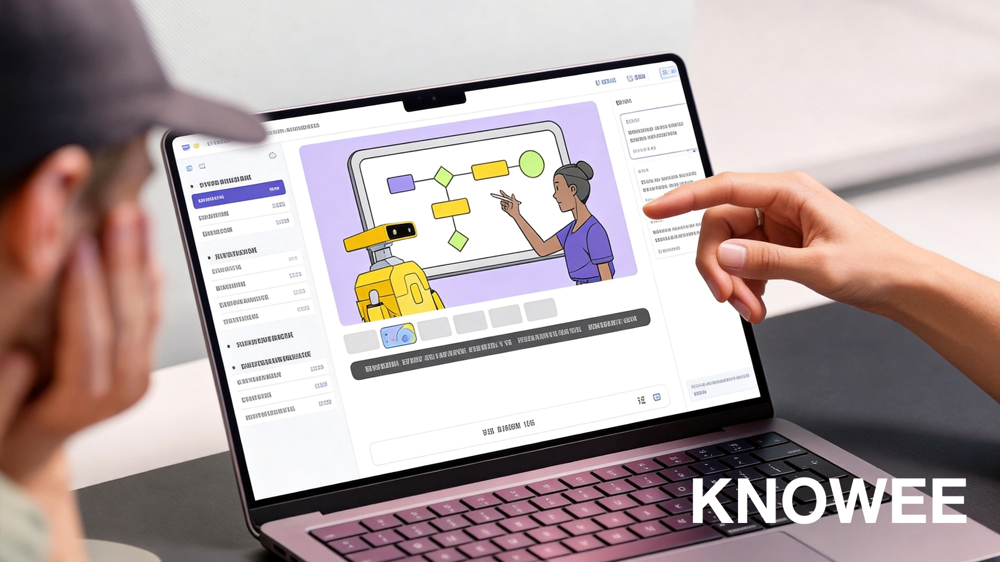
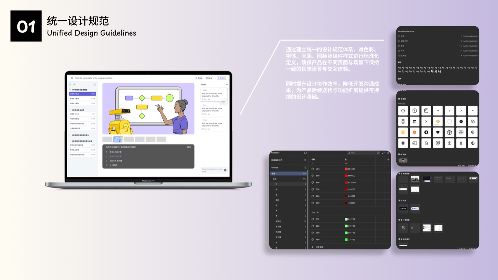
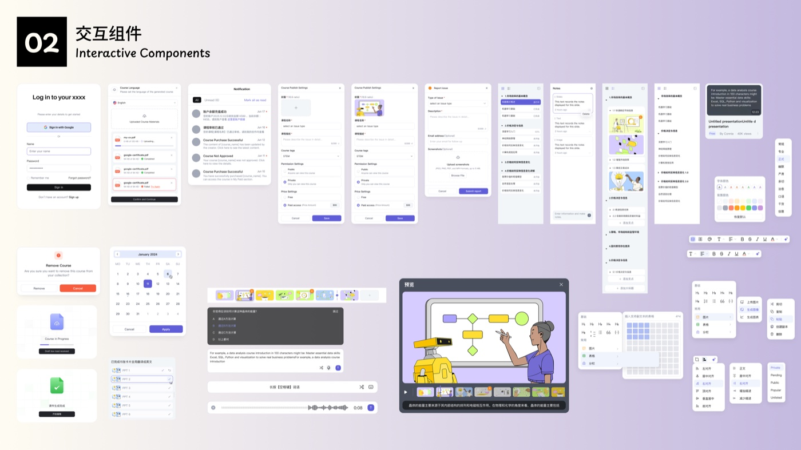
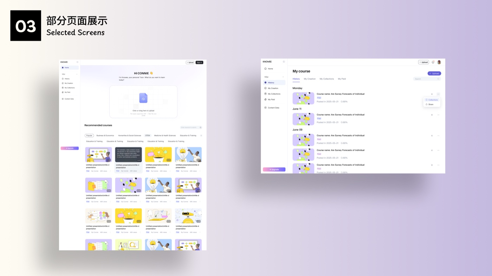
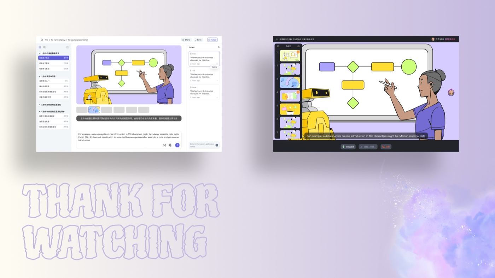

项目背景
KNOWEE 是一个面向教育机构与教师的在线课程平台。项目从 0 到 1 搭建课程交易与学习生态，支持教师端完成课程上传、分类、命名及定价管理，同时为学生端提供课程购买、在线学习及课程资源下载等完整服务流程。
面向教育机构与独立讲师的在线课程平台——B 端创作发布与数据分析，C 端发现、购买、学习、复习的完整体验设计。

KNOWEE 是一个面向教育机构与教师的在线课程平台。项目从 0 到 1 搭建课程交易与学习生态，支持教师端完成课程上传、分类、命名及定价管理，同时为学生端提供课程购买、在线学习及课程资源下载等完整服务流程。
传统在线课程平台大多以录播视频售卖为核心，用户购买后获得的是标准化、单向输出的学习内容，缺乏学习节奏管理与互动反馈机制。因此，本项目需要在课程内容高度标准化的前提下，提升学习过程的参与感与陪伴感，增强用户对学习进度、知识掌握情况及学习成果的感知，从而提高课程完成率与用户留存率。
B 端要高效创作与运营，C 端要沉浸学习——两端体验必须在同一套设计语言下各自最优。
B 端创作 / 发布 / 数据，C 端发现 / 购买 / 学习 / 复习——链路长、角色多，导航必须清晰可扩展。
建立面向教育场景的色彩、字体、组件与间距规范，保证 50+ 页面视觉一致，降低协作与开发成本。
用卡片式布局强化课程封面与内容的层级，减少视觉噪音，让用户专注在当前章节。
章节导航支持碎片化学习；互动测验 + 语音笔记，形成「学 → 练 → 记 → 复」的完整循环。
两类核心用户决定了 B 端与 C 端的设计优先级。
B 端与 C 端共享同一套设计规范，但信息架构各自围绕核心任务展开。
课件上传、AI 辅助编辑、章节大纲与预览。
分类、标签、权限、定价与发布审核。
浏览、销售、完课率、收入等核心指标看板。
推荐课程、分类筛选、详情页与支付。
章节导航、视频 / 幻灯、随堂测验。
语音转文字笔记、历史记录与进度追踪。
围绕用户完整路径（发现 → 购买 → 学习 → 复习）构建清晰的信息层级与导航体系，降低操作成本，让 B/C 双端各自聚焦核心任务。
针对教育场景建立统一的色彩、字体、组件与间距规范，确保品牌调性一致，并为后续功能扩展提供可持续的设计基础。
采用卡片式布局强化课程封面与内容的层级关系，减少视觉噪音，帮助用户聚焦当前学习内容。
引入章节导航支持碎片化学习，搭配互动问答模块，帮助用户检验掌握程度、发现知识盲区。
侧边栏集成语音转文字笔记功能，支持边学边记，形成「学 → 记 → 复」的完整循环，提升长期留存。



讲师侧：数据看板、课件编辑与 AI 辅助，覆盖「做课 → 卖课 → 看数据」。

Light / Dark 双模式，章节大纲 + 主内容 + 笔记侧栏 + 随堂测验。

做对了什么：先梳理 B/C 双端信息架构，再建立统一设计规范，避免「各做各的」；学习模式的三栏布局 + 笔记 + 测验，把「看完视频」升级为「真正学会」。
如果重来：会更早引入 Design Tokens 与组件变量，让 Dark 模式、多语言等扩展更低成本；也会补充可用性测试，验证章节导航与笔记功能的学习效率提升。
收获：这是一次完整的 B+C 端 0→1 实战——从理解教育场景的业务目标，到落地为可交付的界面、规范与组件库，让我对「设计如何同时服务创作者与学习者」有了更具体的理解。